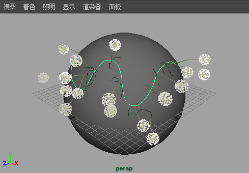
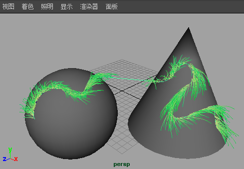
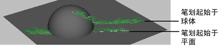

若要在 NURBS 或多边形对象上绘制，必须首先使对象可绘制。直接在可绘制对象上绘制时，“Paint Effects”将沿笔划路径在曲面上创建一条曲线，并将笔划和新笔刷附加到该曲线。平移对象时，笔划将随之移动。笔刷可从曲面偏移。

绘制时，除非您绘制到另一个可绘制对象，否则笔划不会离开曲面。如果绘制笔划期间，绘制跨到了另一可绘制对象，那么该笔划将在其他对象上继续绘制并桥接这两个对象。
注： 只能在 NURBS 或多边形对象上绘制。

注释：
- 因为笔划将尝试保留在曲面上，所以可能会产生异常结果。例如，假设有一个与平面相交的球体。如果开始在球体上进行绘制，那么笔刷一旦离开球体，就会查找另一曲面以继续绘制，在本例中另一曲面即为平面。但是，如果开始在平面上绘制，那么笔刷就永远不会离开曲面，所以笔划不会在球体上继续绘制。

- 当绘制跨过曲面连接边（例如，复制半个面并将这半个面附加到第一个半面而创建出的中心线）时，笔刷笔划会看似“漏”过了该接合。若要解决此问题，请使曲面在 U 和 V 方向上形成周期。
- 根据使用的笔划和所需的效果，请考虑沿路径或沿法线（垂直于路径）翻转管方向。有关信息，请参见翻转管方向。
- 复制具有笔划的对象，但不复制笔划。
在对象上绘制
- 选择要进行绘制的 NURBS 或多边形对象。如果位于场景绘制视图中，请在对象上按住 Ctrl 键并单击（Windows 和 Linux）或按住 Ctrl 键并单击 (Mac OS X)，即可选择该对象。
- 在“建模”(Modeling)菜单集中，选择。
注释：
- 选择“使可绘制”(Make Paintable)时，只有当前选定对象可绘制。任何之前使可绘制的对象都将不可绘制。
- 保存和检索场景时，任何可绘制的对象都将不可绘制。若要在这些对象上绘制，必须在检索后再次使其可绘制。
- 选择。
注： 如果场景中不含可绘制对象，则笔划将位于透视视图的栅格平面上。
- 在“内容浏览器”(Content Browser)（“生成 > 获取笔刷”(Generate > Get Brush)）中或工具架上，单击绘制时要使用的笔刷预设。
- 如有必要，请修改笔划设置（“生成 > Paint Effects 工具”(Generate > Paint Effects Tool) >
 ）。有关这些设置的信息，请参见 Paint Effects 工具选项。
）。有关这些设置的信息，请参见 Paint Effects 工具选项。
- 如有必要，请修改笔刷属性（生成 > 模板笔刷设置(Generate > Template Brush Settings) > ）。有关这些属性的信息，请参见 Paint Effects 笔刷设置。
提示：
- 可在画布上使用热键，以便交互式地更改“热键编辑器”(Hotkey Editor)中“笔刷工具”(Brush Tools)下的“全局比例”(Global Scale)（设定 ModifyUpperRadius，默认热键：B）、仅“笔刷宽度”(Brush Width)（设定 ModifyLowerRadius）和“笔划偏移”(Stroke Offset)（设定 ModifyDisplacement，默认热键：M）。有关其他 Paint Effects 热键的信息，请参见准备使用 Paint Effects 中的使用默认 Paint Effects 热键。
- 在镜像曲面上绘制笔划时，可以设定热键来反转曲面法线。有关详细信息，请参见反转所绘制的对象上的曲面法线。
- 在场景视图或场景绘制视图中，跨平面进行拖动。
有关场景绘制视图的信息，请参见在场景绘制视图中更改对象着色。有关在场景绘制视图中进行工作的信息，请参见在曲面上自动绘制多个笔划。
提示： 在完成对象上绘制后，若要在透视视图的栅格平面上进行绘制，请在场景中非对象的任意位置单击鼠标，取消选择全部对象，然后选择。
相关主题
- 在透视视图的栅格平面上绘制
- 在场景视图中绘制
- 在视图平面上绘制
- 在 3D 对象上进行绘制（使用 3D 绘制工具）
- 创建占用曲面效果